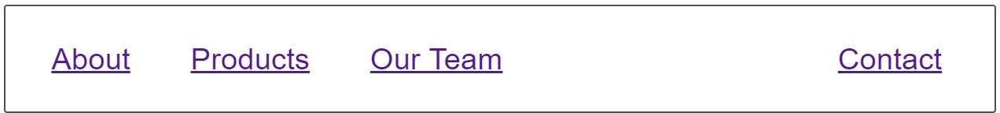

A navigation pattern where one or more elements are separated from the rest of the navigation items.

A common navigation pattern is to have one element pushed away from the others. We can use Flexbox to achieve this, without needing to make the two sets of items into two separate flex containers.
{{EmbedGHLiveSample("css-examples/css-cookbook/split-navigation.html", '100%', 520)}}
This pattern combines auto margins with Flexbox to split the items.
An auto margin absorbs all available space in the direction it is applied. This is how centering a block with auto margins works — you have a margin on each side of the block trying to take up all of the space, thus pushing the block into the middle.
In this case the left auto margin takes up any available space and pushes the item over to the right. You could apply the class push to any item in the list.
The various layout methods have different browser support. See the charts below for details on basic support for the properties used.
{{Compat("css.properties.flex")}}